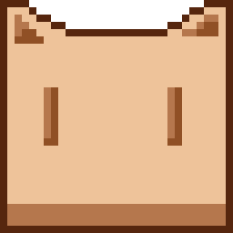

MinePix
PIXEL ART
新建
打开
保存项目
Ctrl S
导出 ↗
未命名.pix
RGBA
铅笔
笔刷
px
水平对称
垂直对称
重置对称轴
切片属性
删除切片
清除所有切片
显示网格
洋葱皮
适应画布
笔形
方形
圆形
线形
图案
角度
°
透明度
%
墨水
简单墨水
Alpha 合成
复制 Alpha+颜色
锁定 Alpha
Shading 明暗
在色板拖选明暗范围 · 左键前一色 / 右键后一色
渐变类型
线性
径向
渐变抖动
无
有序 4×4
笔画稳定器
稳定距离
填充容差
连续填充
图案对齐
对齐到来源
对齐到落点
像普通笔刷
笔刷库
（未选择）
存为笔刷
删除笔刷
像素完美
填充形状
选区建笔刷
笔刷预设
数位笔
替换颜色
选区
矩形
椭圆
自由套索
多边形套索
魔棒
操作
替换
相加
相减
相交
魔棒容差
反选
重选
选择可见内容
缩放 / 旋转
复制
粘贴
水平翻转
垂直翻转
清除像素
取消选区
字体
字号
粗体
斜体
抗锯齿
连字
对齐
左
中
右
填充
描边
描边宽
画布
画布
裁剪
裁边
图像大小
网格设置
切片
无缝平铺
关闭
横向
纵向
双向
透明背景

MinePix
像素绘画与逐帧动画编辑器 · 打开项目或从空白画布开始
新建项目
打开文件
最近文件
最近文件
X — Y —
−
800%
＋
时间轴
ANIMATION
|◀
▶ 播放
▶|
＋ 空白帧
复制帧
删除帧
帧时长
ms
选择
帧列
cel 矩形
Cel 属性
已选 1 帧
插入
选中帧之后
选中帧之前
左移
右移
倒序
复制 cel
剪切
粘贴
清除
移动 cel
批量变换
水平
垂直
收回
链接到当前帧
取消链接
FPS
范围
全部帧
选中帧
新标签
编辑
删除标签
播放
标签默认 / 正向
正向
反向
往返
单次
混合
不透明度
100%
×
取消
确定